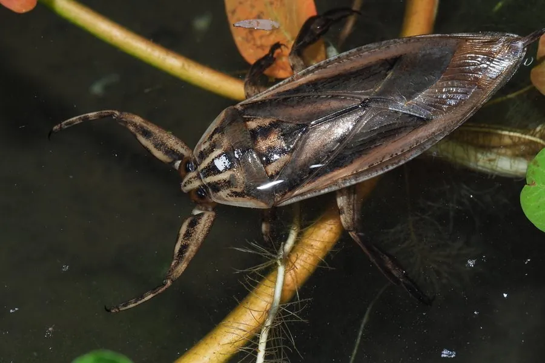

昆虫 · 动物界
桂花蝉 Lethocerus indicus

体型巨大的水生蝽类，体长可达 7–8 厘米，前足镰刀状，善游泳，捕食鱼虾和蛙类，在东南亚部分地区被当作食物。
- 分类
- 门节肢动物门纲昆虫纲目半翅目科负蝽科属田鳖属
- 栖息环境
- 池塘、稻田、沟渠和缓流，常潜伏在水草间
- 地理分布
- 中国南方、东南亚和南亚的淡水水域
- 保护级别
- IUCN 暂无评估；中国未列入国家重点保护名录
物种志
桂花蝉体长 6–8 cm，是体型最大的水生蝽类之一。身体扁平呈长椭圆形，体色黄褐或灰褐，前胸背板和前翅有浅色斑纹；前足特化为镰刀状的捕捉足，中、后足扁平多毛，适合划水，腹部末端有呼吸管，可伸出水面换气。
它生活在池塘、稻田、沟渠和缓流中，分布于中国南方、东南亚和南亚，夜间活动，捕食小鱼、虾、蛙类和水生昆虫，攻击力强，被捉住时可能用喙刺人，引起疼痛。雌虫把卵产在水面植物或雄虫背上，雄虫常背负卵块直到孵化。桂花蝉的翅膀发达，受惊时能飞出水面。它在东南亚被视为食材，可油炸或做成酱料；在中国更多作为药用和观赏昆虫。它对水质变化较敏感，目前尚无保护评估。
形态与习性
- 食性捕食小鱼、虾、蛙类和水生昆虫
- 体长6–8 cm
- 识别身体扁平，前足镰刀状，腹末有呼吸管
- 呼吸腹末呼吸管伸出水面换气
- 繁殖雌虫产卵于水面植物或雄虫背上
- 习性夜行性，善游泳，受惊可飞出水面
趣味知识
- 桂花蝉靠腹部末端一根细长的呼吸管换气，像自带 snorkel。
- 雄虫常把雌虫产下的卵块背在背上，直到幼虫孵化。
- 在东南亚，桂花蝉被油炸后当作风味小吃，味道带桂花香。